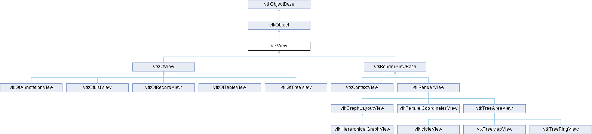

|
Etrek
|
|
Etrek
|
The superclass for all views. More...
#include <vtkView.h>

Classes | |
| class | ViewProgressEventCallData |
Public Member Functions | |
| vtkTypeMacro (vtkView, vtkObject) | |
| void | PrintSelf (ostream &os, vtkIndent indent) override |
| void | AddRepresentation (vtkDataRepresentation *rep) |
| void | SetRepresentation (vtkDataRepresentation *rep) |
| vtkDataRepresentation * | AddRepresentationFromInputConnection (vtkAlgorithmOutput *conn) |
| vtkDataRepresentation * | SetRepresentationFromInputConnection (vtkAlgorithmOutput *conn) |
| vtkDataRepresentation * | AddRepresentationFromInput (vtkDataObject *input) |
| vtkDataRepresentation * | SetRepresentationFromInput (vtkDataObject *input) |
| void | RemoveRepresentation (vtkDataRepresentation *rep) |
| void | RemoveRepresentation (vtkAlgorithmOutput *rep) |
| void | RemoveAllRepresentations () |
| int | GetNumberOfRepresentations () |
| vtkDataRepresentation * | GetRepresentation (int index=0) |
| bool | IsRepresentationPresent (vtkDataRepresentation *rep) |
| virtual void | Update () |
| virtual void | ApplyViewTheme (vtkViewTheme *vtkNotUsed(theme)) |
| vtkCommand * | GetObserver () |
| Public Member Functions inherited from vtkObject | |
| vtkBaseTypeMacro (vtkObject, vtkObjectBase) | |
| virtual void | DebugOn () |
| virtual void | DebugOff () |
| bool | GetDebug () |
| void | SetDebug (bool debugFlag) |
| virtual void | Modified () |
| virtual vtkMTimeType | GetMTime () |
| void | RemoveObserver (unsigned long tag) |
| void | RemoveObservers (unsigned long event) |
| void | RemoveObservers (const char *event) |
| void | RemoveAllObservers () |
| vtkTypeBool | HasObserver (unsigned long event) |
| vtkTypeBool | HasObserver (const char *event) |
| vtkTypeBool | InvokeEvent (unsigned long event) |
| vtkTypeBool | InvokeEvent (const char *event) |
| std::string | GetObjectDescription () const override |
| unsigned long | AddObserver (unsigned long event, vtkCommand *, float priority=0.0f) |
| unsigned long | AddObserver (const char *event, vtkCommand *, float priority=0.0f) |
| vtkCommand * | GetCommand (unsigned long tag) |
| void | RemoveObserver (vtkCommand *) |
| void | RemoveObservers (unsigned long event, vtkCommand *) |
| void | RemoveObservers (const char *event, vtkCommand *) |
| vtkTypeBool | HasObserver (unsigned long event, vtkCommand *) |
| vtkTypeBool | HasObserver (const char *event, vtkCommand *) |
| template<class U, class T> | |
| unsigned long | AddObserver (unsigned long event, U observer, void(T::*callback)(), float priority=0.0f) |
| template<class U, class T> | |
| unsigned long | AddObserver (unsigned long event, U observer, void(T::*callback)(vtkObject *, unsigned long, void *), float priority=0.0f) |
| template<class U, class T> | |
| unsigned long | AddObserver (unsigned long event, U observer, bool(T::*callback)(vtkObject *, unsigned long, void *), float priority=0.0f) |
| vtkTypeBool | InvokeEvent (unsigned long event, void *callData) |
| vtkTypeBool | InvokeEvent (const char *event, void *callData) |
| virtual void | SetObjectName (const std::string &objectName) |
| virtual std::string | GetObjectName () const |
| Public Member Functions inherited from vtkObjectBase | |
| const char * | GetClassName () const |
| virtual vtkTypeBool | IsA (const char *name) |
| virtual vtkIdType | GetNumberOfGenerationsFromBase (const char *name) |
| virtual void | Delete () |
| virtual void | FastDelete () |
| void | InitializeObjectBase () |
| void | Print (ostream &os) |
| void | Register (vtkObjectBase *o) |
| virtual void | UnRegister (vtkObjectBase *o) |
| int | GetReferenceCount () |
| void | SetReferenceCount (int) |
| bool | GetIsInMemkind () const |
| virtual void | PrintHeader (ostream &os, vtkIndent indent) |
| virtual void | PrintTrailer (ostream &os, vtkIndent indent) |
| virtual bool | UsesGarbageCollector () const |
Static Public Member Functions | |
| static vtkView * | New () |
| Static Public Member Functions inherited from vtkObject | |
| static vtkObject * | New () |
| static void | BreakOnError () |
| static void | SetGlobalWarningDisplay (vtkTypeBool val) |
| static void | GlobalWarningDisplayOn () |
| static void | GlobalWarningDisplayOff () |
| static vtkTypeBool | GetGlobalWarningDisplay () |
| Static Public Member Functions inherited from vtkObjectBase | |
| static vtkTypeBool | IsTypeOf (const char *name) |
| static vtkIdType | GetNumberOfGenerationsFromBaseType (const char *name) |
| static vtkObjectBase * | New () |
| static void | SetMemkindDirectory (const char *directoryname) |
| static bool | GetUsingMemkind () |
Friends | |
| class | Command |
| bool | ReuseSingleRepresentation |
| void | RegisterProgress (vtkObject *algorithm, const char *message=nullptr) |
| void | UnRegisterProgress (vtkObject *algorithm) |
| virtual void | ProcessEvents (vtkObject *caller, unsigned long eventId, void *callData) |
| virtual vtkDataRepresentation * | CreateDefaultRepresentation (vtkAlgorithmOutput *conn) |
| virtual void | AddRepresentationInternal (vtkDataRepresentation *vtkNotUsed(rep)) |
| virtual void | RemoveRepresentationInternal (vtkDataRepresentation *vtkNotUsed(rep)) |
| vtkSetMacro (ReuseSingleRepresentation, bool) | |
| vtkGetMacro (ReuseSingleRepresentation, bool) | |
| vtkBooleanMacro (ReuseSingleRepresentation, bool) | |
Additional Inherited Members | |
| Protected Member Functions inherited from vtkObject | |
| void | RegisterInternal (vtkObjectBase *, vtkTypeBool check) override |
| void | UnRegisterInternal (vtkObjectBase *, vtkTypeBool check) override |
| void | InternalGrabFocus (vtkCommand *mouseEvents, vtkCommand *keypressEvents=nullptr) |
| void | InternalReleaseFocus () |
| Protected Member Functions inherited from vtkObjectBase | |
| virtual void | ReportReferences (vtkGarbageCollector *) |
| vtkObjectBase (const vtkObjectBase &) | |
| void | operator= (const vtkObjectBase &) |
| Static Protected Member Functions inherited from vtkObjectBase | |
| static vtkMallocingFunction | GetCurrentMallocFunction () |
| static vtkReallocingFunction | GetCurrentReallocFunction () |
| static vtkFreeingFunction | GetCurrentFreeFunction () |
| static vtkFreeingFunction | GetAlternateFreeFunction () |
| Protected Attributes inherited from vtkObject | |
| bool | Debug |
| vtkTimeStamp | MTime |
| vtkSubjectHelper * | SubjectHelper |
| std::string | ObjectName |
| Protected Attributes inherited from vtkObjectBase | |
| std::atomic< int32_t > | ReferenceCount |
| vtkWeakPointerBase ** | WeakPointers |
The superclass for all views.
vtkView is the superclass for views. A view is generally an area of an application's canvas devoted to displaying one or more VTK data objects. Associated representations (subclasses of vtkDataRepresentation) are responsible for converting the data into a displayable format. These representations are then added to the view.
For views which display only one data object at a time you may set a data object or pipeline connection directly on the view itself (e.g. vtkGraphLayoutView, vtkLandscapeView, vtkTreeMapView). The view will internally create a vtkDataRepresentation for the data.
A view has the concept of linked selection. If the same data is displayed in multiple views, their selections may be linked by setting the same vtkAnnotationLink on their representations (see vtkDataRepresentation).
| void vtkView::AddRepresentation | ( | vtkDataRepresentation * | rep | ) |
Adds the representation to the view.
| vtkDataRepresentation * vtkView::AddRepresentationFromInput | ( | vtkDataObject * | input | ) |
Convenience method which creates a simple representation with the specified input and adds it to the view. NOTE: The returned representation pointer is not reference-counted, so you MUST call Register() on the representation if you want to keep a reference to it.
| vtkDataRepresentation * vtkView::AddRepresentationFromInputConnection | ( | vtkAlgorithmOutput * | conn | ) |
Convenience method which creates a simple representation with the connection and adds it to the view. Returns the representation internally created. NOTE: The returned representation pointer is not reference-counted, so you MUST call Register() on the representation if you want to keep a reference to it.
|
inlineprotectedvirtual |
Subclass "hooks" for notifying subclasses of vtkView when representations are added or removed. Override these methods to perform custom actions.
|
inlinevirtual |
Apply a theme to the view.
|
protectedvirtual |
Create a default vtkDataRepresentation for the given vtkAlgorithmOutput. View subclasses may override this method to create custom representations. This method is called by Add/SetRepresentationFromInputConnection. NOTE, the caller must delete the returned vtkDataRepresentation.
Reimplemented in vtkGraphLayoutView, vtkHierarchicalGraphView, vtkParallelCoordinatesView, and vtkTreeAreaView.
| int vtkView::GetNumberOfRepresentations | ( | ) |
Returns the number of representations from first port(0) in this view.
| vtkCommand * vtkView::GetObserver | ( | ) |
Returns the observer that the subclasses can use to listen to additional events. Additionally these subclasses should override ProcessEvents() to handle these events.
| vtkDataRepresentation * vtkView::GetRepresentation | ( | int | index = 0 | ) |
The representation at a specified index.
| bool vtkView::IsRepresentationPresent | ( | vtkDataRepresentation * | rep | ) |
Check to see if a representation is present in the view.
|
overridevirtual |
|
protectedvirtual |
Called to process events. The superclass processes selection changed events from its representations. This may be overridden by subclasses to process additional events.
Reimplemented in vtkGraphLayoutView, vtkParallelCoordinatesView, and vtkRenderView.
| void vtkView::RegisterProgress | ( | vtkObject * | algorithm, |
| const char * | message = nullptr ) |
Meant for use by subclasses and vtkRepresentation subclasses. Call this method to register vtkObjects (generally vtkAlgorithm subclasses) which fire vtkCommand::ProgressEvent with the view. The view listens to vtkCommand::ProgressEvent and fires ViewProgressEvent with ViewProgressEventCallData containing the message and the progress amount. If message is not provided, then the class name for the algorithm is used.
| void vtkView::RemoveAllRepresentations | ( | ) |
Removes all representations from the view.
| void vtkView::RemoveRepresentation | ( | vtkAlgorithmOutput * | rep | ) |
Removes any representation with this connection from the view.
| void vtkView::RemoveRepresentation | ( | vtkDataRepresentation * | rep | ) |
Removes the representation from the view.
| void vtkView::SetRepresentation | ( | vtkDataRepresentation * | rep | ) |
Set the representation to the view.
| vtkDataRepresentation * vtkView::SetRepresentationFromInput | ( | vtkDataObject * | input | ) |
Convenience method which sets the representation to the specified input and adds it to the view. NOTE: The returned representation pointer is not reference-counted, so you MUST call Register() on the representation if you want to keep a reference to it.
| vtkDataRepresentation * vtkView::SetRepresentationFromInputConnection | ( | vtkAlgorithmOutput * | conn | ) |
Convenience method which sets the representation with the connection and adds it to the view. Returns the representation internally created. NOTE: The returned representation pointer is not reference-counted, so you MUST call Register() on the representation if you want to keep a reference to it.
| void vtkView::UnRegisterProgress | ( | vtkObject * | algorithm | ) |
Unregister objects previously registered with RegisterProgress.
|
virtual |
Update the view.
Reimplemented in vtkQtAnnotationView, vtkQtListView, vtkQtRecordView, vtkQtTableView, and vtkQtTreeView.
|
protected |
True if the view takes a single representation that should be reused on Add/SetRepresentationFromInput(Connection) calls. Default is off.